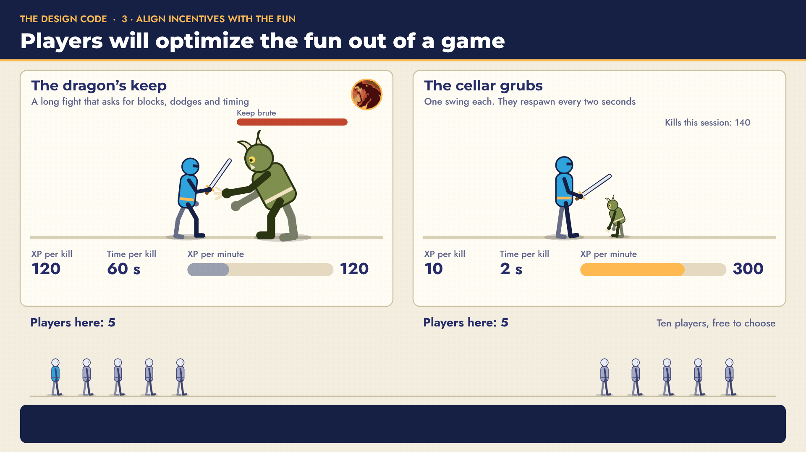
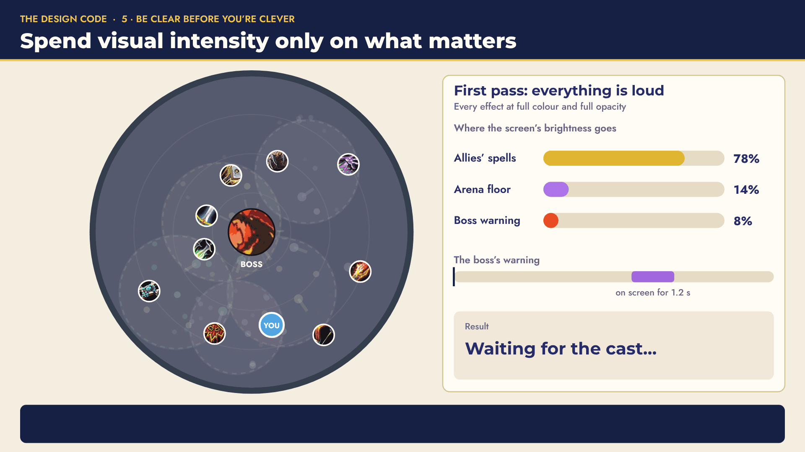
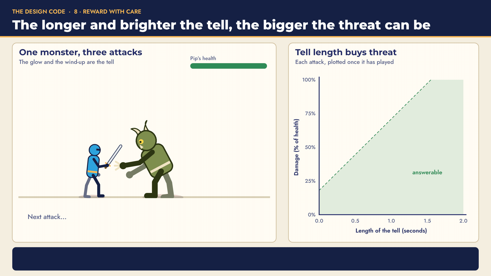
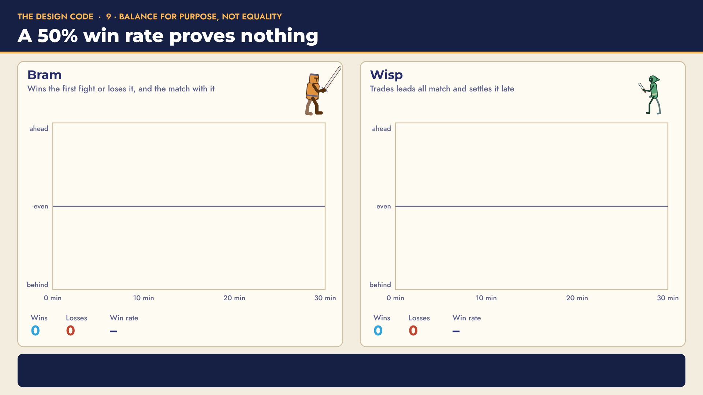
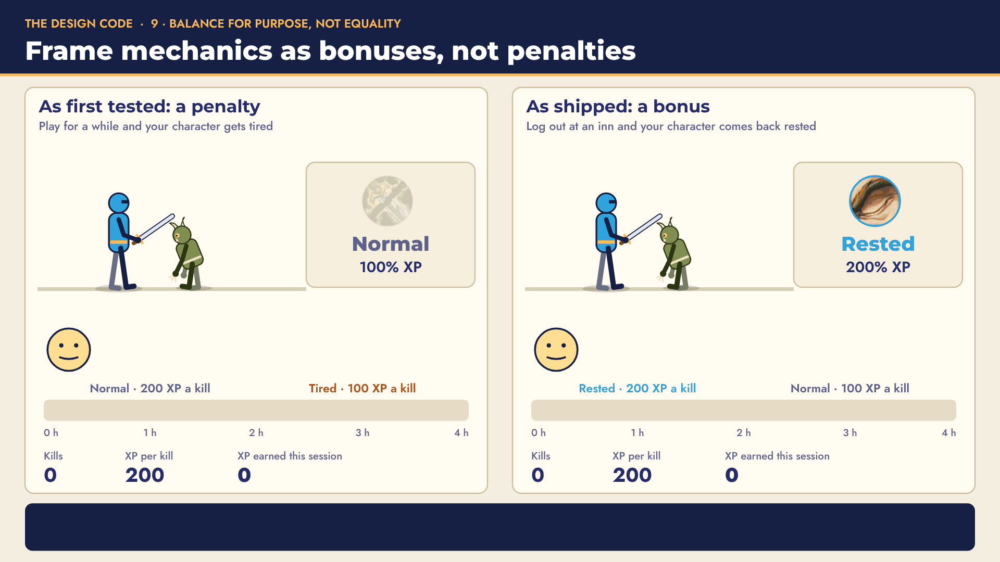

Principles · every course
The Design Code of Conduct collects the rules of thumb that recur across the courses. These are five of them, each as one short animated example you can pause and scrub. Every card says why it was picked.

Ten players, two ways to earn XP, one retune of the reward table.
Picked because it is the rule the Code says outranks all the others, and it only lands when you watch the crowd move.

One raid pull drawn twice. Only the brightness of everything else changes.
Picked because it is the most visual rule on the page: the viewer loses the warning themselves in the first pass.

Three attacks plotted as tell length against damage, then one that breaks the rule.
Picked because it turns “fair” into a line on a chart that a designer can tune against.

Twenty matches each for two heroes. Both finish at exactly 50%.
Picked because it contradicts the first thing most people check, and one overlay shows why.

World of Warcraft’s rest system: one session under two labels, with identical XP.
Picked because it is a shipped case where nothing changed but the words, and players’ reaction reversed.
Figures are the Stick Figure Cast. World of Warcraft icons belong to Blizzard Entertainment and are used for teaching. Numbers in every example are illustrative.